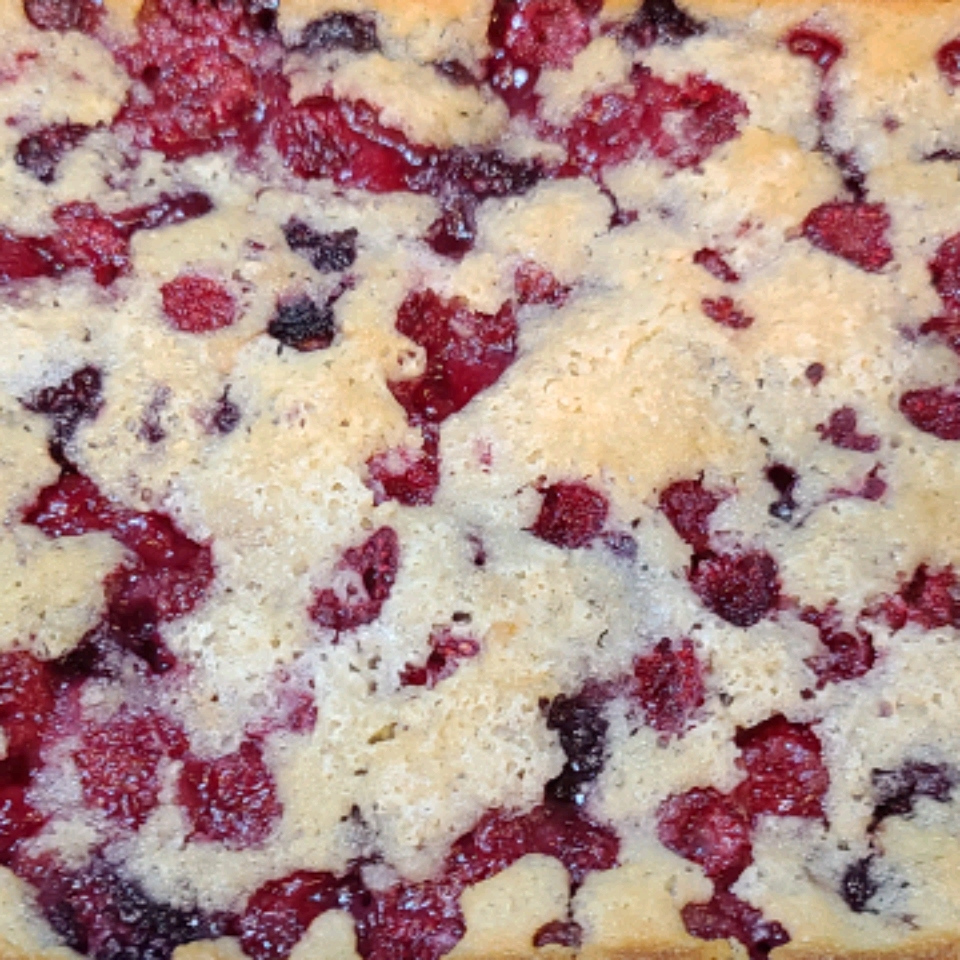

Black Raspberry Cobbler

Description
An interesting dessert made from black raspberries (not to be confused with blackberries!)
Ingredients
- 1/2 cup melted butter
- 1 1/4 cup white sugar
- 3/4 cup milk/li>
- 1 1/2 teaspoons baking powder
- 2 1/2 cups black raspberries
Steps
- Preheat the oven to 350 degrees F (175 degrees C).
- Pour melted butter into an 11x7-inch baking dish.
- Mix 1 cup sugar, flour, milk, and baking powder together in a bowl. Pour on top of melted butter
in the baking dish, making sure not to stir.
Place black raspberries on top of mixture, making sure not to stir. Top with remaining 1/4 cup sugar.
-
Bake in the preheated oven until crust is browned and set, 30 to 40 minutes.
Original Recipe Source
Return Home